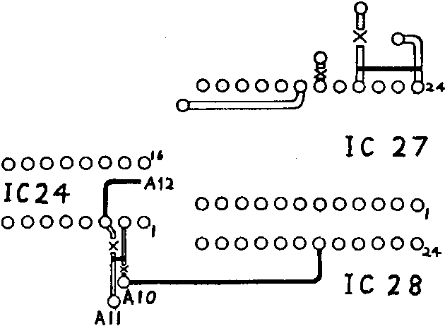

INMC 80 News |
October–December 1981 · Issue 5 |
| Page 31 of 71 |
|---|
which explains why SHIFT is only partly regular in its behaviour and why CTL is highly irregular – as a little time with an ACSII table and the Nascom keyboard will show. SHIFT, CTL and GR (graphics) can be separately identified as depressed in conjunction with any other key.
The input of data from the keyboard is entirely software dependent and the computer readily can (and does) get into a state in which no input from the keyboard is possible. Control can always be regained by Reset which acts in a totally different way. It puts an earth on the Z80 reset input, via PL3/12, and forces a reset to whatever address is set up on LSW1/1 to 4.
The above table will help to localize a keyboard fault (or a fault around IC25 on the main board) which, as in my case, affects the whole of one column or the whole of one row of the table.
This enables the use of 2716 type EPROMs in the four EPROM sockets allowing 8K of firmware to be held in memory.
| Cut tracks near:– | |||
| IC 24 p2 | |||
| IC 24 p3 | |||
| IC 27 p21 | |||
| IC 27 p19 | |||
| Wire link:– | |||
| IC 24 p2 | to | A11 | |
| IC 24 p3 | to | A12 (At hole near Bus line 42) | |
| IC 28 p19 | to | A10 | |
| IC 27 p21 | to | IC 27 p24 | |
| P5 | to | Two pads as for WIRED-OR RAM select. (i.e. for C0000-DFFF link P5 to 9+10) | |
Note that if the selection is to an odd ‘000 the sockets will not be in consecutive order.
To use 2732 type EPROMs for a total of 16K firmware, cut tracks as above,then cut tracks near p20 for each socket,
| Wire link:– | |
| IC 28 p19 to A10 | |
| IC 28 p21 to A11 | |
| IC 24 p16 to IC 24 p2+p3 |
The Chip-select (p20) of each socket is now wire linked directly to an appropriate 4K decode pad.
| Page 31 of 71 |
|---|